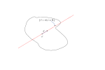
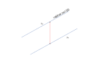

Mat3teden9
Table of Contents
1. Integracija po krivuljah in ploskvah v \( \mathbb{R} ^3 \)
1.1. Ploskovni integral
1.1.1. Izrek 6.10 - Greenova formula (p.S.)
Naj bo \( D \subset \mathbb{R} ^2 \) območje z (odsekoma) gladkim robom ( \( \partial D \) je končna odsekoma gladka krivulja, orientariana skladno z normalo \( (0, 0, + 1) \text{ na } D \)).
\( \vec{F} = (X, Y) \) naj bo \( C^1 \) vektorsko polje v okolici \( \bar{D} \)
Tedaj je
\[ \int\limits_{\partial D}^{} X\,\mathrm{d x} + Y\, \mathrm{dy} = \iint\limits_D^{}(Y_x - X_y) \,\mathrm{d xdy} \]
Dokaz: je podoben dokazu Gaussovega izreka. Že formulacija Greenovega izreka je “dvodimenzionalna različica Gaussovega izreka”.
In to v smislu
\begin{equation} \label{eq:1} \iint\limits_{\partial D}^{} \left\langle \vec{G}, \vec{N} \right\rangle \,\mathrm{d s} = \iint\limits_D^{} \dive \vec{G} \,\mathrm{d S} \end{equation}Če bi imeli v \ref{eq:1} \( \vec{T} \) namesto \( \vec{G} \), bi leva stran v \ref{eq:1} bila krivuljni integral polja \( \vec{G} \) po (orient.) krivulji \( \partial D \). Zato poiščemo polje \( \vec{H} \), za katero je
\[ \left\langle \vec{G}, \vec{N} \right\rangle = \left\langle \vec{H}, \vec{T} \right\rangle \]
Vemo,
\[ \vec{T} = \begin{bmatrix} 0 & -1 \\ 1 & 0 \end{bmatrix} \vec{N} = \underline{R} N \] kjer matrika \( \underline{R} \in \mathbb{R} ^2 \) rotira \( \vec{N} \) za kot \( \frac{\pi}{2} \).
Velja torej \( \vec{N} = \underline{R} ^{-1} \vec{T} \). Vemo, da je \( \underline{R} \) ortogonalna matrika v \( \mathbb{R} ^2 \), saj velja \( \left( \underline{R}^{-1} \right)^T = R \) oz. \( \underline{R}^T = \underline{R}^{-1} \) oz. \( \underline{R}^T \underline{R} = \underline{R} \underline{R}^T = I \)
\begin{align*} \left\langle \vec{G}, \vec{N} \right\rangle &= \left\langle \vec{G}, \underline{R} \vec{T} \right\rangle \\ &= \left\langle \underline{R} \vec{G}, \vec{T} \right\rangle \\ &= \left\langle \vec{H}, \vec{T} \right\rangle \end{align*}Iz tega tako sledi, da če smo označili \( \vec{G} = (U, V) \), potem velja, da je \( \vec{H}= (-V, U) \)
Sledi
\begin{align*} \int\limits_{\partial D}^{} \left\langle \vec{G}, \vec{N} \right\rangle\,\mathrm{d s} &= \int\limits_{\partial D}^{} \left\langle \vec{H}, \vec{T} \right\rangle\,\mathrm{d s} \\ &= \int\limits_{\partial D}^{} \vec{H}\,\mathrm{d s} = \int\limits_{\partial D}^{} \left( -V \, \mathrm{dx} + U \, \mathrm{dy} \right) \end{align*}Hkrati je \[ \iint\limits_D^{} \dive \vec{G} \,\mathrm{d S} = \iint\limits_D^{} U_x + V_y \,\mathrm{d x} \, \mathrm{ dy} \]
In tako iz \ref{eq:1} sledi
\[ \int\limits_{\partial D}^{} \left( -V \, \mathrm{dx} + U \, \mathrm{dy} \right) = \iint\limits_D^{} (U_x - V_y) \,\mathrm{d x} \mathrm{dy} \]
Sedaj z izborom \( (U, V)= (Y, -X) \) dobimo Greenovo formulo.
1.1.2. Izrek 6.11 - Stokesov izrek (p.S.)
Naj bo
- \( M \) omejena gladka orientirana ploskev v \( \mathbb{R} ^3 \)
- \( \vec{F} \) vektorsko polje, definirano v okolici \( \bar{M} \).
Tedaj je \[ \int\limits_{\partial M}^{} \vec{F} \,\mathrm{d }\vec{r} = \iint\limits_M^{} \vec{F} \,\mathrm{d S} \]
Skica dokaza: za primer, ko je \( M = \Gamma_f = \left\{ \vec{r}(x, y) = (x, y, f(x, y)); \ (x, y) \in D \right\} \) za neko območje (basically parametrizacija za naš \( M \)), \( D \subset \mathbb{R} ^2 \) in gladko funkcijo \( f: D \to \mathbb{R} \).
Označimo \( \vec{F} = (X, Y, Z), \ X, Y, Z: M \to \mathbb{R} \) gladke.
Velja
\begin{equation} \label{eq:2} \int\limits_{\partial M}^{} \vec{F}\,\mathrm{d } \vec{r} = \int\limits_{\partial M}^{} X\,\mathrm{d x} + Y \, \mathrm{dy} + Z \, \mathrm{ dz} \end{equation}Parametrizacija roba (\( \partial M \)) je pogojena z zožitvijo \( \vec{r} \) (podana za \( M \)) na \( \partial D \).
Če nadaljujemo \ref{eq:2}
\begin{align*} \int\limits_{\partial D}^{} X(\vec{r}) \,\mathrm{d x} + Y(\vec{r}) \, \mathrm{dy} + Z(\vec{r}) (f_x \, \mathrm{dx} + f_y \, \mathrm{dy}) &= \int\limits_{\partial D}^{} \left[ X(\vec{r}) + Z(\vec{r}) f_x \right]\,\mathrm{d x} + \left[ Y(\vec{r}) + Z(\vec{r}) f_y) \right]\, \mathrm{dy} && \text{ uporabimo Greenovo formulo } \\ &= \iint\limits_D^{} \left[ Y_u (\vec{r}) \frac{\partial x}{\partial x} + Y_v(\vec{r}) \frac{\partial y}{\partial x} + Y_w (\vec{r}) \frac{\partial f(x, y)}{\partial x} + (Z_u + Z_w f_x) f_y + Z f_{xy} \right. \\ & \left. -\left[ X_v + X_w \cdot f_y + (Z_v + Z_w f_y) f_x + Z f_{xy} \right]\right] \,\mathrm{d x dy} \\ &= \iiint\limits_D^{} (-f_x)(Z_v - Y_w) + (-f_y)(X_w - Z_u) + (Y_u - X_v) \,\mathrm{dx dy } \\ &= \iint\limits_D^{} \left\langle (\rot \vec{F})(\vec{r}), \vec{N} \right\rangle \sqrt{1 + f_x ^2 + f_y ^2} \,\mathrm{d x dy} \\ &= \iint\limits_M^{} \rot \vec{F} \,\mathrm{d }\vec{S} \end{align*}kjer smo upoštevali \( \mathrm{dz} = d(d(x, y)) = (f_x \mathrm{dx} + f_y \mathrm{dy}) \) ter smo v drugi vrstici odvajali po verižnem pravilu \( X = X(u, v, w), \,Y= Y(u, v, w) \).
1.1.3. Posledica (pri Simonu opomba)
Tudi \( \rot \) je neodvisna od izbire ONB (ortonormirane baze v \( \mathbb{R}^3 \)).
Dokaz Naj bo \( \vec{r}_0 \in \mathbb{R} ^3 \) in \( \vec{F} \) vektorsko polje, definirano v okolici točke \( \vec{r}_0 \).
Vzemimo vektor \( \vec{n} \in \mathbb{R} ^3 \) in označimo s \( \Pi_{\vec{n}} \) ravnino v \( \mathbb{R} ^3 \) skozi točko \( \vec{r}_0 \) in z normalo \( \vec{n} \).
Dodatne oznake:
- \( K^2_{\vec{n}}(\vec{r}_0, \epsilon) \) je krog v \( \Pi_{\vec{n}} \), s središčem v \( \vec{r}_0 \) in radijem \( \epsilon \).
- \( S_{\vec{n}} ^1 (\vec{r}_0, \epsilon) \): krožnica
Imamo
\begin{align*} \left\langle \left( \rot \vec{F} \right)(\vec{r}_0), \vec{n} \right\rangle &= \lim_{\epsilon \to 0} \frac{1}{\pi \epsilon ^2} \int\limits_{K^2_{\vec{n}}(\vec{r}_0, \epsilon)}^{}\left\langle \rot \vec{F}, \vec{n} \right\rangle\,\mathrm{d S} \\ &\overset{\text{Stokes}}{=} \frac{1}{\pi} \lim_{\epsilon \to 0} \frac{1}{\epsilon ^2} \int\limits_{S_{\vec{n}}^{1}(\vec{r}_0, \epsilon)}^{} \vec{F} \,\mathrm{d }\vec{r} && S_{\vec{n}}^1(\vec{r}_0, \epsilon) \text{ neodvisen od izbire koordinat} \end{align*}Opomba, da če je \( f \) zvezna, potem je \( f(s) = \lim_{\epsilon \to 0} \) povprečje \( f \) na \( K(s, \epsilon) \)
Pišimo \( \vec{v} = \left( \rot \vec{F} \right)(\vec{r}_0) \). Videli smo, da je \( \left\langle \vec{v}, \vec{n} \right\rangle \) neodvisen od izbire ONB \( \forall \vec{n} \), iz česar sledi, da je \( \vec{v} \) neodvisen od izbire baze.
Naj bo \( \left\{ e_1, e_2, e_3 \right\} \) ONB v \( \mathbb{R}^3 \). Označimo za
\begin{align*} a &= \sum\limits_1^3 \undd{a}_j e_j; && a_j = \left\langle a, e_j \right\rangle \\ b &= \sum\limits_1^3 \undd{b} e_j \\ \left\langle a, b \right\langle &= \sum\limits_{j=1}^3 a_j b_j \end{align*}Naj bo \( \left\{ f_1, f_2, f_3 \right\} \) neka druga ONB. Označimo
\begin{align*} a &= \sum\limits_{j=1}^3 A_j f_j \\ b &= \sum\limits_1^3 B_j f_j \end{align*}Označimo \( \left[ a, b \right] = \sum\limits_1^3 A_j, B_j \)
Definiramo linearno preslikavo
\begin{align*} \Lambda: \mathbb{R} ^3 &\to \mathbb{R} ^3 \\ \Lambda: e_1 &\mapsto f_1 \\ e_2 &\mapsto f_2 \\ e_3 &\mapsto f_3 \end{align*}\( \Lambda \) je ortogonalna transformacija, ker ohranja dolžine
\begin{align*} \lVert \Lambda x \rVert ^2 &= \lVert x \rVert ^2 \\ \left\langle \Lambda x, \Lambda x \right\rangle &= \left\langle x, x \right\rangle \\ \left\langle \Lambda \Lambda^T x, x \right\rangle &= \left\langle x, x \right\rangle && \square \end{align*}1.1.4. Primer 6.9 (p.S.)
Naj bo \( M \) zgornja polovica enotske sfere v \( \mathbb{R} ^3 \), torej graf funkcije \( f(x, y) = \sqrt{1 - x ^2 - y ^2}; \ (x, y) \in K^2(0, 1) \).
Vzamemo še \( \vec{F} = \vec{F}(x, y, z) = (3yz, -xz, xy) \). Izračunajmo
\[ I = \iint\limits_M^{} \rot \vec{F} \,\mathrm{d }\vec{S} \]
direktno
\[ \rot \vec{F} = \begin{vmatrix} \vec{i} & \vec{j} & \vec{k} \\ \partial_x & \partial_y & \partial_z \\ 3yz & -xz & xy \end{vmatrix} = (2x, 2y, -4z) \]
Kar pomeni, da je naš integral enak
\begin{align}\label{ali:1} I &= \iint\limits_{}^{} \left\langle (2x, 2y, -4z), (x, y, z) \right\rangle \,\mathrm{d x} \, \mathrm{dy} \\ &= 2 \iint\limits_{}^{} (x ^2 + y ^2 -2z ^2) \,\mathrm{d x} \, \mathrm{dy} && z ^2 = 1 - (x ^2 + y ^2) \\ &= 2 \iint\limits_{}^{} \left[ 3(x ^2 + y ^2) - 2 \right] \,\mathrm{d x} \, \mathrm{dy} \\ &= 6 \iint\limits_{}^{} (x ^2 + y ^2) \,\mathrm{d x}\, \mathrm{dy} = 6 J = -4 (\text{ površina } M) \end{align}Označili smo \[ J = \iint\limits_{}^{} (x ^2 + y ^2) \,\mathrm{d x} \, \mathrm{dy} = \int\limits_0^{2\pi} \int\limits_0^1 r ^2\,\mathrm{d r}\,\mathrm{d }\phi \]
Parametrizacija za \( M \) je
\[ \vec{R} (r, \phi) = \left( r \cos \phi, r \sin \phi, \sqrt{1 - r ^2} \right);\ r\in [0, 1], \ \phi \in [0, 2\pi) \]
To je parametrziacija “polsfere” \( M \).
Velja
\begin{align*} \vec{R}_r \times \vec{R}_{\phi} &= \begin{vmatrix} \vec{i} & \vec{j} & \vec{k} \\ \cos \phi & \sin \phi & - \frac{r}{\sqrt{1 - r ^2}} \\ -r \sin \phi & r \cos \phi & 0 \end{vmatrix} \\ &= \left( \frac{r ^2}{ \sqrt{1 - r ^2}} \cos \phi, \frac{r ^2}{ \sqrt{1 - r ^2}} \sin\phi, r \right) \end{align*}Iz česar sledi, da je
\begin{align*} \left| \vec{R}_r \times \vec{R}_{\phi} \right| &= \sqrt{\frac{r ^4}{1 - r ^2} + r ^2} \\ &= \sqrt{\frac{r ^4 + r ^2 - r ^4}{ 1 - r ^2}} = \frac{r}{ \sqrt{1 - r ^2}} \end{align*}To je neke vrste Jacobi
\begin{align*} J &= 2 \pi \int\limits_0^1 \frac{r ^3}{\sqrt{1 - r ^2}}\,\mathrm{d r} && t = 1- r ^2 \\ &= 2\pi \int\limits_0^1 \frac{r ^2}{\sqrt{1 -r ^2}} r\,\mathrm{d r} \\ &= 2\pi \int\limits_{0 }^{1} \frac{1 - t}{\sqrt{t}} \left( - \frac{1}{2} \right)\,\mathrm{d t} \\ &= \pi \int\limits_0^1 \frac{1 - t}{\sqrt{t}}\,\mathrm{d t} \\ &= \pi \left( \int\limits_0^1 \left( t ^{- \frac{1}{2}} - t^{\frac{1}{2}} \right)\,\mathrm{d t} \right) = \ldots = \frac{4 \pi}{3} \end{align*}Če nadaljujemo \ref{ali:1}, to pomeni, da je
\[ I = 6J - 8 \pi = 0 \]
Stokesov izrek
Na \( \partial M \) je \( \vec{F}(x, y, z) = (0, 0, xy) \).
\begin{align*} I &= \int\limits_{}^{} \vec{F}\,\mathrm{d } \vec{r} \\ &= \int\limits_{\partial M}^{} \left\langle \vec{F}, \odv{r} \right\rangle\,\mathrm{d S} = 0 \quad \square \end{align*}Saj je \( \odv{r} \in \left\{ z = 0 \right\} \) in je posledično skalarni produkt enak 0.
Spomnimo, če je
- \( \vec{v} \in \mathbb{R} ^3 \)
- \( u \) zvezna realna funkcija na okolici točke \( \vec{v} \)
- \( \vec{a} \in \mathbb{R} ^3;\, \left| \vec{a} \right| = 1\)
Tedaj je smerni odvod funkcije \( u \) v točki \( \vec{v} \) in v smeri \( \vec{a} \) definiran kot 
\begin{align*} \frac{\partial u}{\partial \vec{a}} (\vec{v}) &= \phi' (0) && \phi(t) = u(\vec{v} + t \vec{a}) \\ &= \lim_{h \to 0} \frac{\phi(h) - \phi(0)}{h} = \lim_{h \to 0} \frac{u(\vec{v} + h \vec{a}) - u (\vec{a})}{h} \end{align*}Vemo:
\[ \frac{\partial u}{\partial \vec{a}} (\vec{v}) = \left\langle \nabla u (\vec{v}), \vec{a} \right\rangle; \, \nabla = (\partial_x, \partial_y, \partial_z) \]
1.1.5. Izrek 6.12 - Greenovi identiteti (p.S.)
Naj bo \( \Omega \subset \mathbb{R} ^3 \) odprta množica z gladkim robom in \( u, \, v \) gladki skalarni polji, definirani na neki okolici \( \bar{\Omega} \). Tedaj velja
Greenova identita
\[ \iint\limits_{\partial \Omega}^{} u \frac{\partial v}{\partial \vec{n}} \, \mathrm{dS} = \iiint\limits_{\Omega}^{} (u \Delta v + \left\langle \nabla u, \nabla v \right\rangle) \,\mathrm{d V } \]
kjer je \( \vec{n} \) enotska zunanja normala na \( \partial \Omega \) in je \( \Delta = \frac{\partial ^2}{\partial x ^2} + \frac{\partial ^2}{\partial y ^2} + \frac{\partial ^2}{\partial z ^2} \) Laplaceov operator.
Greenova identiteta
\[ \iint\limits_{\partial \Omega}^{} \left( u \frac{\partial v}{\partial \vec{n}} - v \frac{\partial u}{\partial \vec{n}} \right) \,\mathrm{d S} = \iiint\limits_{\Omega}^{} \left( u \Delta v - v \Delta u \right) \,\mathrm{d V} \]
Dokaz: 2. Greenova identiteta sledi iz 1. z zamenjavo vlog \( u \leftrightarrow v \) ter odštevanjem.
Dokaz 1. Greenove identitete: Uporabimo Gaussovo formulo za \( \vec{F} = u \nabla v = u \left( v_x, v_y, v_z \right) \).
\begin{align*} \iiint\limits_{\Omega}^{} \dive \vec{F} \,\mathrm{d V} &= \iiint\limits_{\Omega}^{} \left( u \Delta v + \left\langle \nabla u, \nabla v \right\rangle \right) \,\mathrm{d V}\\ &\overset{\text{Gauss}}{=} \iint\limits_{\partial \Omega}^{} \vec{F} \,\mathrm{d } \vec{S} \overset{(1)}{=} \iint\limits_{\partial \Omega}^{} \left\langle \vec{F}, \vec{n} \right\rangle \,\mathrm{d S} \\ &= \iint\limits_{\partial \Omega}^{} \left\langle u \nabla v, \vec{n} \right\rangle \,\mathrm{d S} \\ &= \iint\limits_{}^{} u \left\langle \nabla u, \vec{n} \right\rangle \,\mathrm{d S} \\ &= \iint\limits_{}^{} u \frac{\partial v}{\partial \vec{n}} \,\mathrm{d S} && \square \end{align*}
1.1.6. Posledica 6.13 (p.S.)
Za \( u = 1 \) dobimo
\[ \iint\limits_{\partial \Omega}^{} \frac{\partial v}{\partial \vec{n}} \,\mathrm{d S} = \iiint\limits_{\Omega}^{} \Delta v \,\mathrm{d V} \]
1.1.7. Preglednica definicij integralov
2. Diferencialne enačba
Razlika med enačbo in formulo:
Formula je izraz, da se leva stran lahko izrazi kot desno.
Enačba pa je naloga, iz katere moramo nekaj izračunati.
Enačbe (naloge, problemi), v katerih nastopajo odvodi funkcij, ki jih iščemo.
Temelj je \( y' = f \), kjer je \( f \) podana in iščemo \( y \). Rešitev so …, integrali, … (Mat1).
- Navadne diferencialne enačbe: iščemo funkcijo ene spremenljivke, predvsem pa nastopajo odvodi po eni spremenljivki.
- Parcialne diferencialne enačbe: iščemo funkcijo več spremenljivke, predvsem pa
nastopajo odvodi po večih spremenljivkah.
S slednjimi se ne bomo ukvarjali.
Splošna oblika navadne diferencialne enačbe (krajše NDE)
\[ F(x, y, y', y'', \ldots, y^{(n)}) = 0 \]
kjer je \( F \) podana, \( y=y(x) \) pa iščemo.
Temeljna vprašanja:
- obstoj (ali rešitev obstaja?)
- definicijsko območje (Kje je definirana, če ja, za katere \( x \in \mathbb{R} \)?)
- enoličnost (Imamo eno rešitev, če ne, koliko jih je? Če jih je več ali so medseboj odvisne)
- eksplicitnost (ali znamo rešitev zapisati?)
- lastnosti rešitve (odvedljivost rešitve, v matematičnem smislu velika, stabilnost)
Primer karbonične funkcije (PDE) in lastnosti rešitev:
upoštevamo \( \Delta = \partial ^2_x + \partial_y ^2 \) in rešujemo enačbo \( \Delta u = 0; \, u: \mathbb{R} ^2 \to \mathbb{R} ^2 \).
Pogoje je, da je \( u \in C^2 \). Če naš \( u \) reši Laplaceovo enačbo, potem sledi, da je \( u \in C^{\infty} \) (ekstremno regularna funkcija).
Primer stabilnosti pri enačbi z začetnimi pogoji (ang. initial conditions):
Če imamo enačbo \( F(x, y, y') = 0 \) z začetnimi pogoji \( y(x_0) = y_0 \). Kako se majhna sprememba začetnega pogoja odraža na rešitvi enačbe.
Francoz J. Hadamard je definiral pojem dobro postavljene enačbe.
Red enačbe je najvišja stopnja odvoda, ki v enačbi nastopi. To pomeni, da je
\[ y' = 3 \sin y + x ^5 \]
je enačba 1. reda in
\[ y ^6 + y y ''' = -8 \log \left| x \right| \]
je enačba 3. reda
Eksplicitne enačbe prvega reda so oblike \( y' = f(x, y) \) in implicitne enačbe prvega reda so oblike \( F(x, y, y') = 0 \).
2.1. Primeri
\( y' = f(x) \)
Rešitev je
\[ y(\mathbf{x}) := \int\limits_{x_0}^{\mathbf{x}} f(\xi) \,\mathrm{d }\xi \]
kar je /Riemann-Darbouxov določeni integrali funkcije \( f \) po \( [x_0, x] \) in velja \( y(x_0) = 0 \)
Splošna rešitev je
\[ y(x) = \int\limits_{x_0}^x f(\xi) \,\mathrm{d }\xi + C, \, C = \text{konst} \in \mathbb{R} \]
\( y'' = f(x) \)
To lahko prevedemo na primer 1), ker lahko zapišemo
\[ (y')' = g'(x) = f(x) \]
iz česar potem sledi splošna rešitev
\[ y'(x) = \int\limits_{x_0}^x f(\xi) \,\mathrm{d }\xi + C = g(x) \]
kjer je \( y' = g \). Splošna rešitev je odvisna od dveh konstant \( C, D \in \mathbb{R} \)
2.2. Načelo
Splošna rešitev enačbe n-tega reda bo odvisna od n konstant (nimamo še orodja, s katerim bi to dokazali).
2.3. Cauchyjeva naloga
Je enačba z začetnimi pogoji in je eksplicitna enačba 1. reda.
\begin{align*} y' &= f(x, y) \\ y(x_0) &= y_0 \end{align*}Tu je \( f \) podana, \( x_0, y_0 \in \mathbb{R} \) prav tako \( y = y(x) \) pa iščemo
2.4. Polje smeri
Poglejmo
\begin{equation} \label{eq:3} y' = f(x, y) \end{equation}Ocenimo\/predvidimo\/zaslutimo rešitev ne, da bi jo izračunali. Temelj je dejstvo, da je tangente na graf (= smer grafa) funkcije podana z odvodom.
Enačba \ref{eq:1} nam pove, da če gre rešitev \( y \) skozi točko \( (x_0, y_0) \) mora biti njen naklon (smer!) enak \( f(x_0, y_0) \), kar je enolično določena količina.
Označimo/zabeležimo jo s kratko črtico skozi \( (x_0, y_0) \) v smeri \( f(x_0, y_0) \). Če to naredimo za dovolj gosto mrežo točk \( (x_0, y_0) \) lahko zaslutimo dinamiko rešitev oz. obliko grafa \( y \).
Tako kot študentje včasih ne vedo, katera rešitev je prava in zapišejo obe, tudi jaz zapišem več samostalnikov/glagolov, da me bolje razumete.
2.4.1. Primer
Rešujemo enačbo
\[ y' = - \frac{x}{y} = f(x, y) \]
Vidimo, da \( \forall k \in \mathbb{R} \) velja
\begin{align*} y' = k & \iff - \frac{x}{y} = k \\ & \iff y = - \frac{1}{k}x \end{align*}V splošnem \( (x, - \frac{1}{k} x) \) je točka na premici \( N_k \). \( (1, k) \) je tangentni vektor. Skalarni produkt teh dveh vektorjev je
\[ \left\langle (x, - \frac{1}{k}, x), (1, k) \right\rangle = 0 \]
iz česar sledi, da je vsaka točka pravokotna na tangentni vektor.
Analitična rešitev diferencialne enačbe je
\begin{align*} y ' &= - \frac{x}{y} && \left. \right/ \cdot y \\ y y' + x &= 0 \left. \right/ \cdot 2 \\ 2y y' + 2x &= 0 \\ (y ^2 + x ^2) ' &= 0 \\ \end{align*}Rešitev je torej enotska krožnica s središčem v 0:
\[ x ^2 + y ^2 = C \]
2.5. Eulerjeva metoda
za približno reševanje diferencialnih enačb. Imejmo Cauchyjevo nalogo \( y' = f(x, y) \) in \( y(x_0) = y_0 \).
Izberemo \( x \in \mathbb{R} \) in rečemo, da je \( x > x_0 \). Interval \( [x_0, x] \) razdelimo na \( n \) enakih delov:
\[ x_0 < x_1 < x_2 < \ldots < x_n = x \] Torej
\[ x_j = x_0 + \frac{x - x_0}{n} j \]
Definiramo \( \frac{x - x_0}{n} = h \) in rečemo, da je \( n \) velik, kar pomeni, da je \( h \) majhen.
Izračunamo \( y' (x_0) \) tako, da vstavimo v \( f(x_0, y_0) \). Upoštevamo, da je za vsako funkcijo tangenta najboljši linearni približek.
Ker je \( h = x_1 - x_0 \) majhen, je \( x_1 \) blizu \( x_0 \), zato je \( y(x_1) \) blizu vrednosti tangente na \( \Gamma_y\), ki jo poznamo, v točki \( (x_0, y_0) \), kar pa znamo izračunati. To vrednost označimo z \( y_1 \). S postopkom nadaljujemo, v točki \( x_1 \) rešujemo nov Cauchyjev problem
\begin{align*} y ' &= f(x, y) \\ y_1 &= y(x_1) \end{align*}Po \( n \) korakih se postopek ustavi in dobimo oceno za \( y(x_n) = y(x) \).
Tangenta skozi \( (x_{j -1}, y_{j - 1}) \) z naklonom \( f(x_{j -1}, y_{j - 1}): Y - y_{j-1} = f(x_{j-1}, y_{j-1} (X - x_{j-1})) \), kjer smo označili \( Y = y_j \text{ in } X = x_j \).
Včasih me je prav sram, kako preproste stvari govorim… pa še plačan sem.
Imamo
\begin{align}\label{ali:2} x_j &= x_{j - 1} + h \\ y_j &= y_{j - 1} + f(x_{j -1}, y_{j - 1})h \end{align}2.5.1. Primer 7.3 (p.S.)
Imamo problem \( y' = y \) z začetnim pogojem \( y(0) = 1 \).
Vzamemo \( x > 0 , \, n \in \mathbb{N} \). Po algoritmu \ref{ali:2} dobimo v splošnem \( y_j = (1 + h) y_{j - 1} \)
\begin{align*} y_0 &= 1 \\ y_1 &= 1 + 1 \cdot h = 1 + h \\ y_2 &= (1 + h ) ^2 \\ &\vdots \\ y_n &= (1 + h )^n = \left(1 + \frac{x}{n}\right)^n && \text{ ocena za } y(x) \end{align*}Iz tega sledi, da je
\[ y(x) \doteq \left(1 + \frac{x}{n}\right) ^n \]
Boljši približek dobimo z večanjem \( n \). Torej pogledamo
\[ \lim_{n \to \infty} \left( 1 + \frac{x}{n} \right)^n = e ^x \]
Kar je pa eksaktna rešitev našega Cauchyjevega problema.
2.6. Reševanje nekaterih osnovnih tipov navadnih diferencialnih enačb
2.6.1. Enačba z ločljivimi spremenljivkami
To so enačbe z oblike
\[ y ' = P(x) \cdot Q(y) \overset{\text{(2)}}{=} (P \otimes Q)(x, y) \]
(2): matematiki temu jokingly rečejo tenzorski produkt
za dani funkciji \( P, \, Q \).
Primer enačbe je \( y' = e^{x + y} \). Primer enačb, ki to niso pa so \( y' = \sin (xy) \) ali \( y' = e^{xy} \).
Funkcijo preoblikujemo
\[ \frac{y'}{Q(y)} = P(x) \]
in ker je definicija \( y' = \frac{\mathrm{d} y}{\mathrm{d}x} \), iz česar potem sledi
\begin{align} \int\limits_{}^{}\frac{1}{Q(y)}\,\mathrm{d y} &= \int\limits_{}^{}P(x)\,\mathrm{d x} \label{ali:3}\\ F(y) &= G(x) \end{align}Če dano odvajamo po \( x \)-u, potem
\begin{align*} F(y) &= G(x) && \left. \right/ \frac{\mathrm{d} }{\mathrm{d}x} \\ F'(y) y' &= G'(x) && \text{ verižno pravilo } \\ \frac{1}{Q(y)} &= P(x) \\ \implies \frac{y'}{Q(y)} &= P(x) && \text{se ujema s čimer smo začeli } \end{align*}Včasih dlje od integrala ne moremo priti in je integral rešitev (se moramo tudi to naučiti videti), npr. \( y(x) = \int\limits_0^x e^{t ^2}\,\mathrm{d t} \)
- Primer 7.4
Rešujemo enačbo \( y' = y \), kjer sta \( P(x) = 1 \) in \( Q(y) = y \).
Ob upoštevanju \ref{ali:3} dobimo
\begin{align*} \int\limits_{}^{} \frac{1}{y}\,\mathrm{d y} &= \int\limits_{}^{}\,\mathrm{d x} \\ \log \left| y \right| &= x + C \\ \left| y \right| &= e ^{x + C} = D e^x \end{align*}Delimo na dva primera:
- za \( D = 0 \) je \( y = 0 \)
- za \( D \ne 0 \) \( y \) nima ničle in je \( y \) enolično predznačen na \( \mathbb{R} \).
Rešitev je tako
\[ y = \tilde{D} e^x \]
za neki \( \tilde{D} \in \mathbb{R} \)
2.6.2. Linearna navadna diferencialna enačba prvega reda 7.2 (p.S.)
To je enačba oblike
\begin{equation} \label{eq:4} y' + py = q \end{equation}kjer sta \( p, q \) podani funkciji, \( y \) pa iščemo. (torej linearna kombinacija \( y, \, y' = q \)).
- Trditev 7.1 (p.S.)
Rešitve za \( y \) so afin prostor. (linearno premaknjene rešitve, Če je \( y_0 \) (katerakoli) rešitev in je \( R \) prostor vseh rešitev za \ref{eq:4}, tedaj je
\[ R- y_0 = \left\{ y - y_0; \, y \in R \right\} \] linearen (=vektorski) prostor.
Torej se linearna struktua enačbe zrcali v linearno strukturo rešitve.
Dokaz: Naj bo \( \mathrm{L}y := y' + py \), kjer je \( \mathrm{L} \) diferencialni operator: operator je funkcija, ki vzame funkcijo in jo pretvori v neko novo funkcijo, če pa to naredi na diferencialni enačbi, pa je to diferencialni operator.
Rešujemo \( \mathrm{L} y = q \).
Vzamemo \( y_1, y_2 \in R - y_0 \). Trdimo, da je \( y_1 + y_2 \in R - y_0 \). Ekvivalentno je, da vemo, da sta
\begin{align}\label{ali:5} y_1 &+ y_0 \\ \label{ali:6} y_2 &+ y_0 \end{align}rešitvi za \ref{eq:4}. Hočemo pa, da je \( y_1 + y_2 + y_0 \) rešitev za \ref{eq:4}.
Velja
\begin{align*} \mathrm{L} (y_1 + y_2 + y_0) &= L((y_0 + y_1) + (y_0 + y_2) - y_0) \\ &\overset{\text{ L linearen}}{=} L(y_0 + y_1) + L(y_0 + y_2) - Ly_0 \\ &= q + q - q = q \end{align*}kjer smo v drugi vrstici upoštevali po vrsti \ref{ali:5}, \ref{eq:6} ter predpostavko, da je \( y_0 \) neka rešitev (kateratkoli).
Podobo prevermo zaprtost za množenje s skalarji \( \lambda y_1 \in R - y_0 \). \( \square \)
Opazimo
\[ R- y_0 = \left\{ y;\, \mathrm{L} y = 0 \right\} \]
Vzamemo \( w \in R \). Tedaj \( \mathrm{L} (w - y_0) = \mathrm{L} w - \mathrm{L} y_0 = q - q = 0 \), kjer je \( w - y_0 \in R - y_0 \).
Če je \( \mathrm{L}z = 0 \), tedaj \( \mathrm{L}(z + y_0) = \mathrm{L}z \mathrm{L}y_0 + q \ \implies \ z + y_0 \in R \) oz.
\[ R = y_0 + \left\{ y;\, \mathrm{L}y = 0 \right\} \]
kjer je \( y_0 \) partikularna rešitev, \( \left\{ y;\, \mathrm{L}y = 0 \right\} \) prostor rešitev homogene enačbe \( y' + py = 0 \), na kratko homogena rešitev.
Rešitev je tako sestavljena iz
\[ y_{\text{spl}} = y_{\text{part}} + y_{\text{hom}} \]
Reševanje: Kako bi rešili \( y' + py = q \), kjer bi želeli odvod produkta oblike
\[ (yg) ' = y' g + g' y = q \]
kjer \( g \) ne poznamo.
Tako našo \ref{eq:4} pomnožimo z \( m \) in dobimo
\begin{align*} my' + mpy &= qm \\ (y g)' &= q && \text{ želimo } \\ my' + mpy &= gy' + g' y \\ \implies m &= g \\ \implies mpy &= m' y \\ \implies mp &= m' \\ \implies \frac{m'}{m} &= p \\ \implies \left( \log \left| m \right| \right) &= p \end{align*}Tako rešujemo RD integral
\begin{align} \log \left| m(x) \right| &= \int\limits_{x_0}^x p(\xi) \,\mathrm{d }\xi \\ m(x) &= e ^{\int\limits_{x_0}^x p(\xi) \,\mathrm{d }\xi} \label{ali:7} \end{align}Iz enačbe
\[ \left( y' m \right) = qm \]
lahko izračunamo \( y \)
\begin{align*} (ym)(x) &= \int\limits_{x_0}^x q(\eta) m(\eta) \,\mathrm{d }\eta \\ y(x) &= \frac{1}{m(x)} \int\limits_{x_0}^x q(\eta), m(\eta) \,\mathrm{d }\eta \end{align*}kjer je \( m \) podan s formulo \ref{ali:7}.
\( x_0 \) pri \ref{ali:7} in \( y(x) \) nista nujno enaka. Če sta, moramo vpeljati konstanto \( C \)
\begin{align*} (ym)(x) &= \int\limits_{x_0}^x q(\eta) m(\eta) \,\mathrm{d }\eta + C \\ y(x) &= \frac{1}{m(x)} \int\limits_{x_0}^x q(\eta), m(\eta) \,\mathrm{d }\eta + \frac{C}{m(x)} \end{align*} - Izrek
Splošna rešitev linearne diferencialne enačbe \ref{eq:4} se glasi
\[ y(x) = Ce ^{- P(x)} + e^{-P(x)} \int\limits_{x_0}^x q(s) e^{P(s)}\,\mathrm{d s}; \quad C \in \mathbb{R} \]
kjer je
\begin{equation} \label{eq:5} P(x) = \int\limits_{x_0}^x p(\xi) \,\mathrm{d }\xi \end{equation}in je \( x_0 \) poljubna točka na intervalu, na katerem je \( p \) definiran.
Če potegnemo vzporednice, vidimo, da je rešitev res enoparametrična družina rešitev:
\begin{align*} Ce^{-P(x)} &= y_{\text{hom}} \\ e^{-P(x)} \int\limits_{x_0}^x q(s) e ^{P(s)}\,\mathrm{d s} &= y_{\text{par}} \end{align*}Formula velja ṡe naprej, če \( P \) iz zveze \ref{eq:5} nadomestimo s \( P + D \) za neko konstanto \( D \in \mathbb{R} \)

- Primer
Imamo enačbo \[ y' + \frac{y}{1 -x} = \frac{1}{1-x} \]
Vpeljemo spremenljivko \( z \) s predpisom
\[ y(x) = z(1 - x) \text{ oz. } z(t) = y(1 - t); \quad t = 1 - x \]
Iz tega sledi, da
\[ y' (x) = - z' (x) \]
Enačba se glasi:
\[ - z (t) + \frac{z(t)}{t} = \frac{1}{t} \text{ oz. } z' - \frac{z}{t} = \frac{1}{t} \]
To je linearna diferencialna enačba za \( p(t) = q(t) = \frac{1}{t} \). Po izreku je rešitev
\begin{align*} P(t) &= \int\limits_{t_0}^t p(\tau) \,\mathrm{d }\tau \\ &= -\int\limits_{t_0}^t \frac{1}{\tau}\,\mathrm{d }\tau \\ &= \log \left| t_0 \right| - \log \left| t \right| \end{align*}Lahko vzamemo \( P(t) = - \log \left| t \right| \). Konjugirani vrednosti konstante \( \log \left| t_0 \right| \) se pri partikularni rešitvi izničita, pri homogeni rešitvi pa konstanto skrijemo v konstanto \( C \).
Sledi, da je
\begin{align*} z(t) &= C e^{\log \left| t \right|} + e ^{\log \left| t \right|} \int\limits_{t_0}^t \left( -\frac{1}{s} \right) e^{- \log \left| s \right|}\,\mathrm{d s} \\ &= C \left| t \right| - \left| t \right| \int\limits_{t_0}^t \frac{1}{s \left| s \right|}\,\mathrm{d s} && t \cdot t_0 > 0, \text{ enako predznačena } \\ \int\limits_{t_0}^t \frac{1}{s \left| s \right|}\,\mathrm{d s} &= \begin{cases} - \frac{1}{t}; \ t > 0 \\ \frac{1}{t}; \ t < 0 \end{cases} + \tilde{C} \\ &= \tilde{C} - \frac{1}{\left| t \right|} \end{align*}\( t, t_0 \) morata biti enako predznačena, drugače ima integral pol.
Tako dobimo, da je rešitev
\[ z(t) = C \left| t \right| - \left| t \right| \left( \tilde{C} - \frac{1}{\left| t \right|} \right) = (C - \tilde{C}) \left| t \right| + 1; \ t \ne 0 \]
Torej
\[ z(t) = 1 + \begin{cases} At; \ t > 0\\ Bt; \ t < 0 \end{cases} \]
2.6.3. Bernouliijeva diferencialna enačba 7.3 (p.S.)
Bernoullijeva diferencialna enačbe je oblike
\[ y' + py = qy^{\alpha}; \]
kjer sta \( p, q \) sta dani funkciji in \( \alpha \in \mathbb{R} \) dan.
Za \( \alpha = 1 \) dobimo homogeno LDE, za \( \alpha = 0 \) imamo LDE. Brez izgube za splošnost (BSŠ) rečemo \( \alpha \ne 0, 1 \)
Delimo z \( y^{\alpha} \) in uvedemo novo spremenljivko \( z = y ^{1 - \alpha} \) dobimo
\begin{align*} y ^{-\alpha} y' + p y^{1-\alpha} &= q && z' = \frac{1}{1 - \alpha} y^{-\alpha} y' \\ \frac{z'}{1 - \alpha} + p z &= q \end{align*}Dobimo
\[ z' + (1 - \alpha) pz = (1 - \alpha) q \]
kar pa je LDE, kar že znamo rešiti.
2.6.4. Riccatijeva diferencialna enačba 7.5 (p.S.)
To je enačba oblike
\[ y ' = ay ^2 + by + c \]
kjer so \( a, b, c \) podane funkcije in \( a \ne 0 \). Če je \( c = 0 \) dobimo Bernoullijevo enačbo.
Reševanje: Če poznamo (uganemo, najdemo na cesti, vseeno) eno rešitev, označimo jo z \( y_1 \), tedaj splošno rešitev dobimo s substitucijo \( y = z + y_1 \)
\[ z' + y'_1 = a (z ^2 + 2az y_1 + y_1 ^2) + b (z + y_1) + c \]
ker poznamo \( y_1 \), velja \( y'_1 = ay_1 ^2 + b y_1 + c \) in tako dobimo
\[ z' = a z ^2 + (2 a y_1 + b) z \]
kjer količine \( a, (2 a y_1 + b) \) poznamo. To je pa Bernoullijeva enačba, ki jo znamo rešiti.